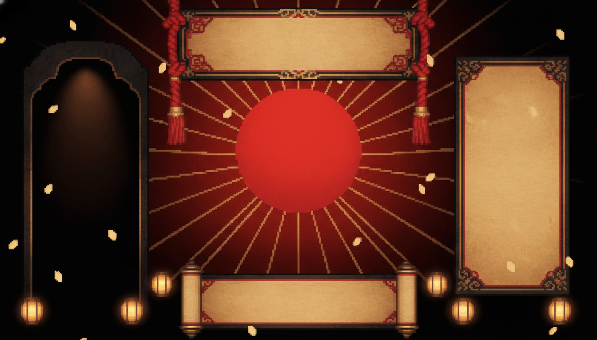
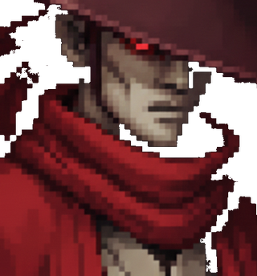
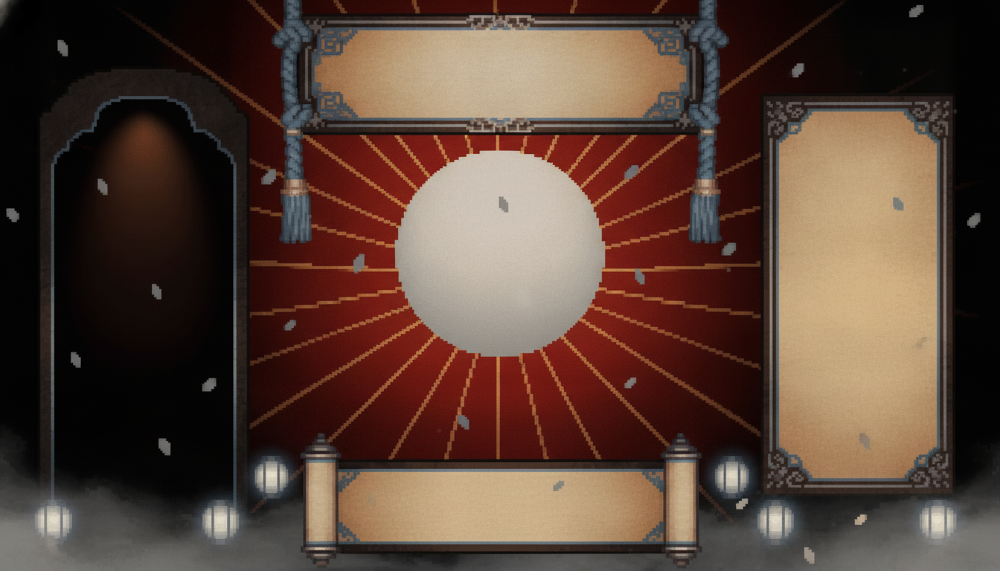
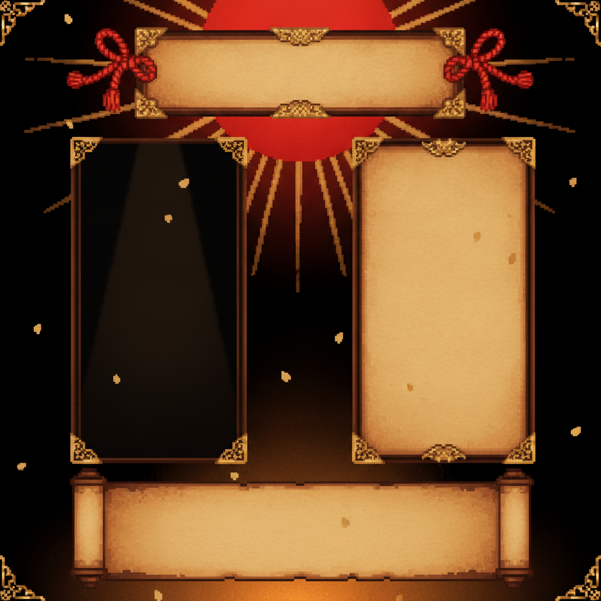
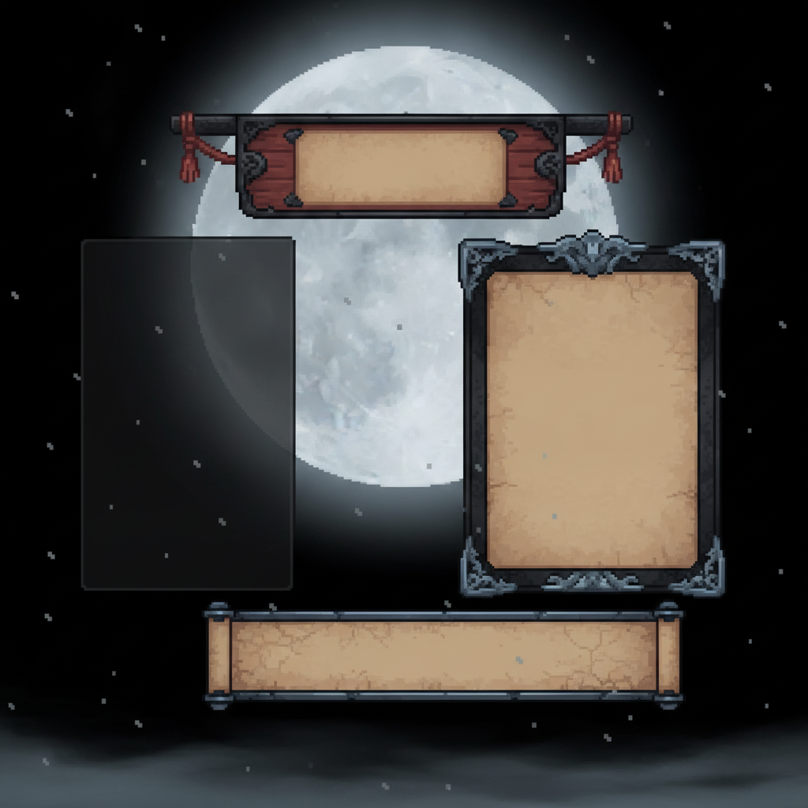
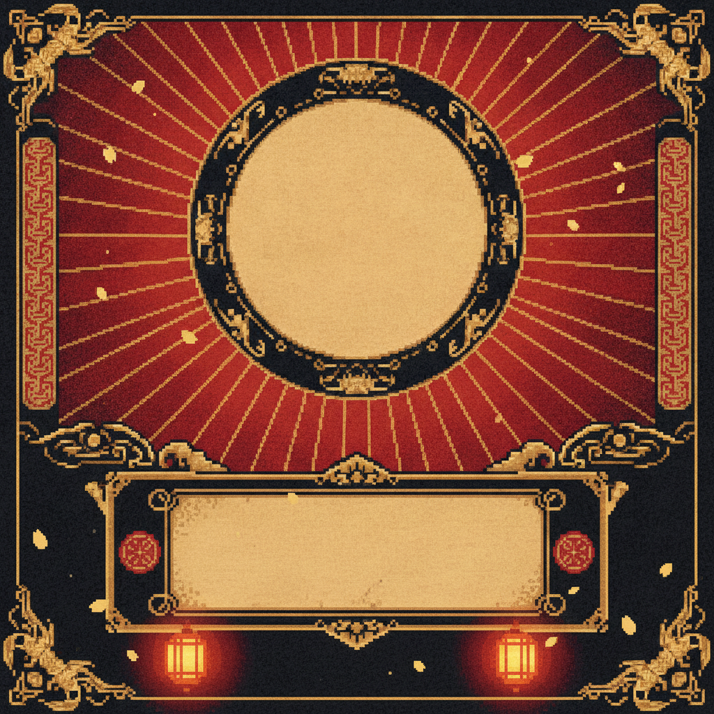
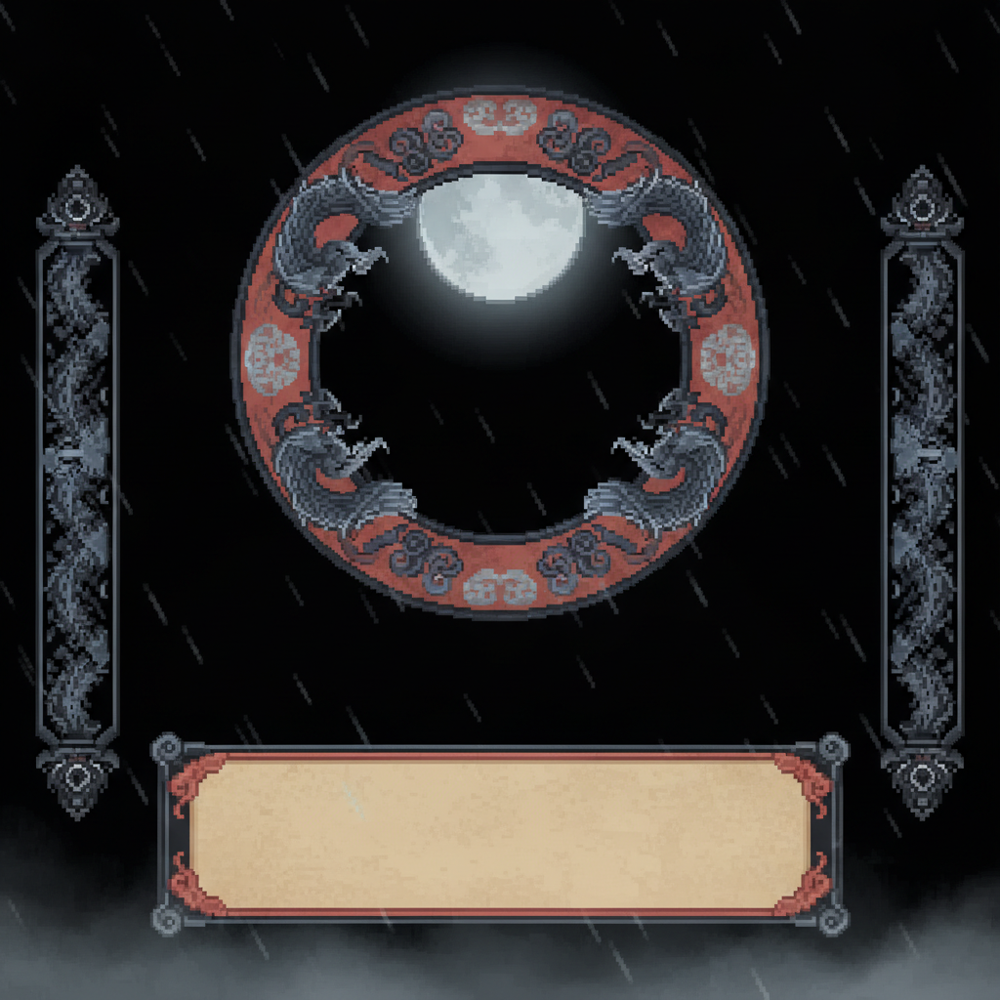

结算页 v2 — 生图双生底板 + 真素材合成 result-design-lab
底板由生图管线产出(与游戏全部 UI 资产同一条 Gemini 管线、同一风格前缀,调性同源)。胜利/战败为结构级对称双生:战败版是把胜利版整图喂回模型"同构重绘"——同一横匾、同一立绘拱位、同一战绩面板、同一台词卷轴,只有材质与情绪互换(旭日金瓣暖灯 ↔ 苍月灰烬冷雾)。字与立绘为游戏真素材叠加。
勝
VICTORY — 旭日 · 金瓣 · 暖灯

1
勝利
VICTORY
2

3
戦績
ROUNDS2 - 0
MAX COMBO9
DMG DEALT217
SUPERS2
TIME0:47
4
KENJI · 剣二
「刀は、鞘に戻った。」
●1 匾上墨书「勝利」(实装用毛笔字体, 需向字体子集加 勝利敗北 四字, ~2KB)。●2 拱形立绘位是底板画好的(带暖色顶光), 真立绘直接放入。
●3 战绩用竖排面板: ROUNDS / MAX COMBO 现成, DMG·SUPERS·TIME 需加 3 个计数器(~10 行)。●4 台词写进卷轴纸面(墨色), 你喜欢的 quote 机制原样保留。
敗
DEFEAT — 苍月 · 灰烬 · 冷雾(同构双生)

敗北
DEFEAT
1
2
戦績
ROUNDS1 - 2
MAX COMBO6
DMG DEALT164
敵残 HP18
TIME1:12
3
HAYATO 「遅すぎる。」
KENJI · 剣二
「……見事だ。もう一度！」
4
●1 同一拱位放你的角色(降饱和+压暗 = 败者冷处理), 与胜利页构图完全一致 —— 你要的对称。
●2 同一战绩面板, 多一行红字「敵残 HP 18」: 告诉玩家"就差 18 血", 最强的再战动机。
●3 双声部台词: 胜者的挑衅一行小字(隼人「遅すぎる。」), 卷轴里是你角色的败词 —— 剣二的「……見事だ。もう一度!」天然把情绪引向再战。
●4 J 再戦 是全页唯一脉动发亮的元素。
备选底板(首轮方图,构图同位但装饰差异较大)

win-a 旭日横匾版(方图)

lose-a 苍月挂牌版(方图)

win-b 对称圆窗版(方图)

lose-b 对称圆窗版(方图)
推荐:上面这对 16:9 双生底板直接实装。实装账单: ① 底板 2 张已生成(在 assets/ui-lab, 与其它 UI 资产同管线);
② drawResult 重写为"底板 + 定位文字/立绘"(与现在同一渲染方式, 无新机制); ③ 统计计数器 3 个(伤害/超必/用时, ~10 行);
④ 毛笔字体子集补「勝利敗北」四字(~2KB); ⑤ 双声部台词零新内容(quoteWin/quoteLose 数据早已就位)。
底板若有想改的细节(比如战败版背后的红霞想更冷、匾额想更宽), 生图管线重出一张只要 30 秒。